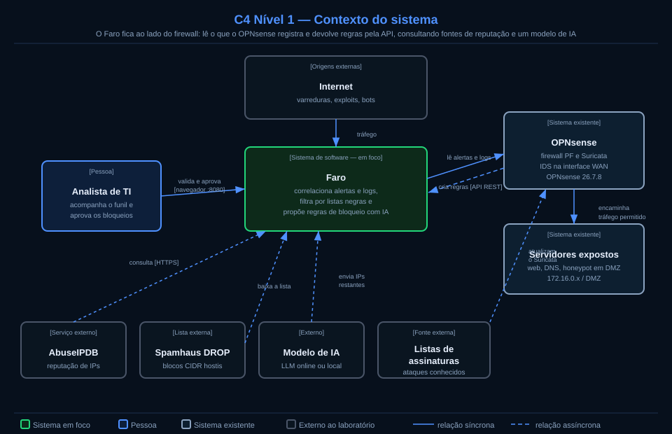
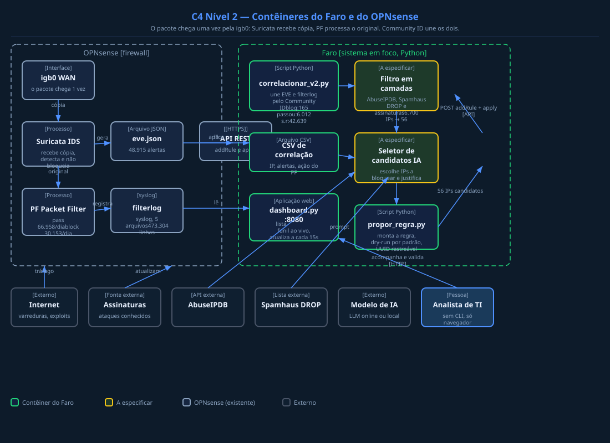

Pipeline que correlaciona 48.915 alertas do Suricata com o filterlog do OPNsense usando Community ID, classifica cada fluxo por desfecho e propõe regras de bloqueio via API REST — sem LLM escrevendo direto no firewall.
Um firewall real em produção, alertas reais, logs reais — e a pergunta:
de 48.915 alertas, quantos representam risco real que ainda não foi bloqueado?
Firewall OPNsense 26.7.8 protegendo uma rede real com política de blacklist + default deny. O Suricata 8.0.8 roda em modo IDS (wire/pcap) na interface WAN — ele vê uma cópia do tráfego antes do PF decidir.
eve.json — alertas do Suricata (48.915 eventos, 7 dias)filterlog — decisões do PF (473.304 linhas, 5 dias)crowdsec_blocklists — 8.328 IPs bloqueados em tempo realABUSEIP — alias com 414.244 IPs (score 100, 180 dias)Gerenciar regras de firewall manualmente é lento e propenso a erros. O objetivo é construir um pipeline que:
O Suricata vê o pacote antes do PF decidir. O número de alertas sozinho não diz nada sobre o que realmente ameaça a rede.
Se 99,2% das origens já estão na blacklist, a maioria dos alertas descreve tráfego que o PF já bloqueia. Uma regra nova só tem valor sobre o que passa.
1.377 dos 1.397 alertas públicos são assinaturas de reputação (ET CINS, DShield). Isso mede divergência entre listas, não comportamento novo.
6.495 alertas (82% do resíduo) são do host 192.168.15.200 — dispositivo de outra rede gerando falsos positivos de STUN, Discord e DNS.
Community ID une os dois sistemas com uma chave exata. O funil classifica cada alerta por desfecho e separa o resíduo por causa-raiz.
Tráfego WAN · igb0
IDS wire/pcap
eve.json + community_id
26.7.8_2
filterlog pass + block
Junção exata
3 desfechos
API REST
5 regras ativas
192.168.15.200 gera falsos positivos de STUN (3.664), DNS .biz (1.009), Discord (647). Não é ataque — é dispositivo na rede.
→ suppress/threshold no Suricata
IPs que estão em uma lista mas não em outra. Medir contribuição exclusiva e latência de cada feed (AbuseIPDB, Spamhaus, DShield).
→ comparar feeds, medir latência
8 alertas do Realtek CVE-2021-35394 (exploit ativo). 5 IPs bloqueados via API REST do OPNsense. 12 são STUN/Jabber (legítimo).
→ 5 regras IA-aparecido ativas no PF
Proposto pelo prof. Diego Kreutz na avaliação pública de 20/10/2026 — ver fonte
O Faro fica ao lado do firewall: lê o que o OPNsense registra e devolve regras pela API, consultando fontes de reputação e um modelo de IA.

O pacote chega uma vez pela igb0: o Suricata recebe uma cópia e o PF processa o original. A correlação pelo Community ID gera o CSV que alimenta o filtro, a IA, a proposta de regra e o dashboard.

docs/especificacao_ia.md no repositório.
Filterlog de 09/10 a 08/11/2026 · OPNsense em produção · rede real
Todos são tráfego legítimo — o funil funcionou
6.725 IPs externos únicos detectados em 48.915 alertas — distribuídos por mais de 40 países.
10.271 alertas — maior fonte
Blocos 85.217.140.x · ET CINS
6.380 alertas — AWS e DCs
SSH, RDP, MySQL scan
4.696 alertas — VPNs e proxies
42.639 alertas (87,2%) em SEM REGISTRO — o PF bloqueou pelo default deny. Mais 165 com bloqueio explícito no filterlog. O volume de alertas superestima o risco real em 87%.
Os 18 externos que passaram são STUN e Jabber (legítimos), não divergência entre listas. Script coletar_feeds.py arquivando snapshots diários para medir latência.
Com 31 dias de dados: IP individual (4.945 regras) = 0% cobertura. Comportamento (169 regras) = 0% cobertura. Os IPs que passam são legítimos — sem resíduo para diferenciar famílias.
CrowdSec já está ativo no OPNsense com 8.328 IPs bloqueando em tempo real. Resultado: ambos 0% de cobertura incremental. Concordam — o tráfego que passa é legítimo.
Sem resíduo perigoso, o LLM não tem o que propor. Quando entrar (Fase 3), nunca escreverá direto no firewall — toda proposta passa pelo simulador primeiro. Proteção contra injeção indireta de prompt (OWASP LLM01).
| Família | Regras geradas | Cobertura incremental | Bloqueio colateral | Interpretação |
|---|---|---|---|---|
| IP individual | 4.945 IPs | 0 (0%) | 0 | IPs mudam a cada dia |
| Comportamento (porta+taxa) | 169 regras | 0 (0%) | 0 | Sem resíduo para generalizar |
| CrowdSec (baseline) | 8.328 IPs | 0 (0%) | 0 | Concorda: tráfego legítimo |
| AbuseIPDB (baseline) | 414.244 IPs | 0 (0%) | 0 | Concorda: tráfego legítimo |
Dada a política de blacklist + default deny do OPNsense, os fluxos que passam são tráfego legítimo (STUN, Jabber, Discord, DNS, atualizações Linux). Nenhuma regra adicional deveria bloqueá-los. O firewall já está funcionando corretamente. O resultado confirma que o volume de alertas do Suricata superestima o risco em 87% — e que o CrowdSec e o pipeline chegam à mesma conclusão de forma independente.
Executado sobre 473.304 linhas reais de filterlog (5 dias, 28/09 a 02/10/2026):
As 5 regras de bloqueio do CVE-2021-35394 (Realtek SDK) não geraram nenhum falso positivo em 336.049 fluxos benignos reais. Regras aprovadas para produção.
De logs de servidor web até um pipeline de firewall em produção — com dois pivôs de tema no caminho.
Proposta de sistema para extrair campos de CIs em papel via OCR e LLM. Feedback: professor considerou OCR + regex suficiente, LLM seria "elefante branco". Pediu um problema em que a IA faça sentido de fato.
Mudança para score de risco em logs de sistemas web de clientes (frigoríficos) expostos à internet, com comparação contra AbuseIPDB e CrowdSec. Feedback: limitar o escopo aos logs do servidor web; começar com um mês de logs de um servidor.
Rack, firewall bare metal, Proxmox, Zabbix, placa de rede para IDS, patch panel. Feedback: muito infraestrutura — pediu o desenho arquitetural mostrando onde entra a IA.
1,3 milhão de registros em ~20 horas, de 23.055 IPs únicos. Tentativas em Telnet, SSH, SNMP, 443. Feedback: varredura ≠ ataque; falta tráfego benigno; IP não identifica cliente por NAT. Problema definido: filtrar os 23k IPs por listas negras e usar IA no que restar.
Já filtrava IPs por listas negras e passava o restante à IA. Pediu autorização para produção. Feedback: produção é a última etapa — primeiro validar com tráfego benigno e malicioso, falsos positivos e acurácia. Escopo fechado: gerar regras para o OPNsense e mapear quais ataques ele bloqueia.
48.915 alertas → 6.700 IPs → 57 IPs após AbuseIPDB → ~1.400 alertas → assinaturas (Realtek SDK). Community ID une EVE e filterlog. Feedback: respostas mais curtas; detalhar nomes e funcionamento das listas e das assinaturas.
Três camadas: AbuseIPDB + Spamhaus DROP + assinaturas Suricata. Realtek CVE-2021-35394 detectado em 8 dos 56 IPs. IA semiautomática propõe bloqueio via API REST. Dashboard em tempo real. Feedback: slides poluídos; pediu desenho arquitetural, fluxograma e especificação das regras da IA. "É bem legal — agora é iterar e se aprofundar."
Avaliação pública em unipampa4all.github.io · última atualização 20/10/2026
Evolução concreta, mas 2 mudanças de tema e tendência a trazer novidades em vez de aprofundar
Problema real e relevante, mas IA atuando numa etapa pequena e sem métricas de efetividade
"Aparecido, a sua energia é admirável: você montou um laboratório inteiro, expôs um servidor à internet para ver o que acontecia e já tem o Faro bloqueando IPs com um painel em tempo real. Poucos colegas chegaram tão perto de algo funcionando de verdade. O próximo passo, porém, não é colocar mais coisas, e sim provar o que você já tem."
— Prof. Diego Kreutz · avaliação pública · 20/10/2026
Avaliação pública de 20/10/2026 · ver fonte
Usar o testbed do laboratório para gerar tráfego benigno (navegação, picos legítimos) e malicioso (força bruta, varreduras, exploits) com rótulos. Medir falsos positivos e taxa de detecção com e sem a IA.
Executamos validar_trafego_benigno.py sobre os 5 dias de filterlog real (473.304 linhas). Identificamos 336.049 fluxos benignos e testamos as 5 regras IA-aparecido contra eles.
Comparar dois modelos online de provedores diferentes + um modelo local nos mesmos 56 IPs, medindo concordância com analista, custo e latência por decisão.
O pipeline já permite trocar o modelo via configuração. A arquitetura determinística atual (Fase 2) foi validada — o LLM entra na Fase 3 como família adicional de regras. A comparação entre modelos fica como trabalho futuro após a base determinística estar sólida.
→ Bloqueado intencionalmente: sem resíduo real para classificar, comparar modelos seria circular. Retomar quando houver dados rotulados.
Pedir à LLM regras por padrão de comportamento (taxa, sequência de portas, horários) e não só por assinaturas. Testar contra variações do mesmo ataque para medir robustez a mutações.
Implementamos a família de regras comportamentais (porta + taxa) em avaliar_familias.py. Resultado do split temporal A/B:
Tabela dos ataques observados nos logs de produção, indicando quais o OPNsense bloqueia com as regras geradas e quais exigem firewall de aplicação (ModSecurity). Entrega final proposta pelo professor.
Criamos docs/mapa_cobertura.md classificando os 48.915 alertas por tipo de ameaça:
| Tipo | Alertas | Cobertura |
| Reputação (ET CINS) | 41.023 | OPNsense ✅ |
| Exploit (Realtek CVE) | 8 | OPNsense ✅ |
| Legítimo (STUN, DNS) | 7.884 | Nenhum (OK) |
| SQL Injection / XSS | — | ModSecurity |
O professor citou um mestrando que construiu um pipeline para melhorar regras do ModSecurity. Conversar com ele pode dar uma base de ataques, métricas e scripts reaproveitáveis para a parte de aplicação web.
Identificado como sinergia possível — ambos trabalham com regras de segurança geradas por IA em camadas diferentes (rede vs. aplicação). O mapa de cobertura (Caminho 4) já documenta onde o ModSecurity seria necessário, servindo de base para a colaboração.
→ Aguarda contato com o colega após a apresentação final.
Os dados do honeypot (1,3M registros, 23k IPs) e o funil das listas negras (49k alertas → 56 IPs), somados a uma avaliação rigorosa da IA, renderiam um artigo para o SBSeg (WTICG ou salão de ferramentas) ou WGRS do SBRC.
→ Contribuição pronta para artigo — falta apenas redigir.
✅ Concluído — 66 arquivos, 140 testes, release v1.0 no GitHub
✅ Concluído — interna (6.495), reputação (1.377), comportamento (20)
✅ Concluído — 4 famílias em 31 dias, split temporal A/B
✅ Publicado — C4 nível 1 e 2 no site do professor
✅ Concluído — este site, com contexto, problema, solução, evolução
✅ Concluído — 0% de falso positivo · 336.049 fluxos · 100% cobertura Realtek
✅ Concluído — critérios, prompt, fluxo de decisão, schema JSON em docs/especificacao_ia.md
✅ Concluído — tabela de 48.915 alertas por tipo, cobertura e recomendações em docs/mapa_cobertura.md